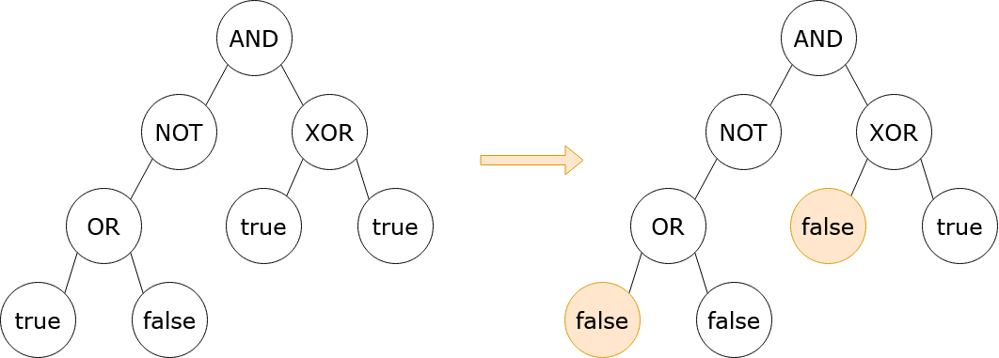

| Category | Difficulty | Likes | Dislikes |
|---|---|---|---|
| Algorithms | Hard | 110 | 2 |
dynamic-programming | tree | depth-first-search | binary-tree
google
You are given the root of a binary tree with the following properties:
0 or 1, representing false and true respectively.2, 3, 4, or 5, representing the boolean operations OR, AND, XOR, and NOT, respectively.You are also given a boolean result, which is the desired result of the evaluation of the root node.
The evaluation of a node is as follows:
true or false.In one operation, you can flip a leaf node, which causes a false node to become true, and a true node to become false.
Return the minimum number of operations that need to be performed such that the evaluation of root yields result. It can be shown that there is always a way to achieve result.
A leaf node is a node that has zero children.
Note: NOT nodes have either a left child or a right child, but other non-leaf nodes have both a left child and a right child.
Example 1:

Input: root = [3,5,4,2,null,1,1,1,0], result = true
Output: 2
Explanation:
It can be shown that a minimum of 2 nodes have to be flipped to make the root of the tree
evaluate to true. One way to achieve this is shown in the diagram above.Example 2:
Input: root = [0], result = false
Output: 0
Explanation:
The root of the tree already evaluates to false, so 0 nodes have to be flipped.
Constraints:
[1, 105].0 <= Node.val <= 5OR, AND, and XOR nodes have 2 children.NOT nodes have 1 child.0 or 1.2, 3, 4, or 5.